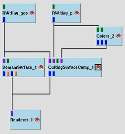
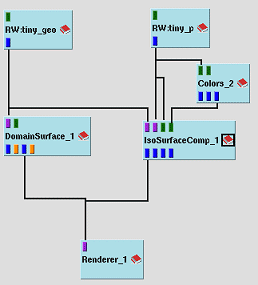
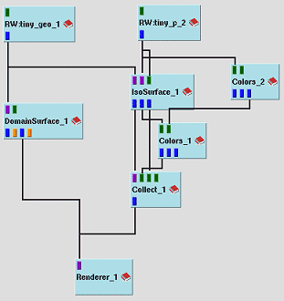
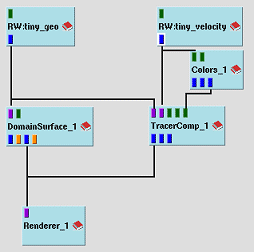
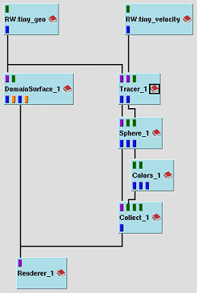

Complex Modules
Instead of using the Quickstart feature we recommend to use the Complex
Modules (more comfortable) instead, if possible; e.g. you can use
the Complex Module CuttingSurfaceComp
instead of the module group CuttingSurface-Colors-Collect.
With Covise Rel. 5.2.4 you get 3 Complex
Modules:
These 3 Complex Modules provide the functionality of the base module (CuttingSurface,
IsoSurface, Tracer) plus additional modules (like Colors, Collect) that
are typically used in a group with the base module; the complex modules
can be directly connected to the renderer module (see table below).
| Complex Module |
New Example Map |
Replaces |
CuttingSurfaceComp
equivalent to
-
CuttingSurface -
- Colors -
- Collect
(for scalar data
- see example maps)
-
CuttingSurface -
- VectorField
- Colors
- Collect
(for vector data)
|
 |
 |
| |
tutorial_press_1_new.net |
tutorial_press_1.net |
IsoSurfaceComp
equivalent to
-
IsoSurface -
- Colors -
- Collect
(for scalar data
- see example maps)
-
IsoSurface -
- VectorField -
- Colors -
- Collect
(for vector data)
|
 |
 |
|
|
tutorial_press_2_new.net |
tutorial_press_2.net |
TracerComp
equivalent to
-
Tracer -
- Sphere -
- Colors -
- Collect
(for animated particles
- see example maps)
|
 |
 |
| |
tutorial_vel_2_new.net |
tutorial_vel_2.net |
Please note:
The Colors module is used to specify a colormap (explicitly); the mapping
of data to colors is done by using the functions of 'Colors' implicitly
in the complex module! |
(for more information about complex modules and example maps see COVISE
Tutorial, Analysis of 3D Data and Module
Reference Guide)